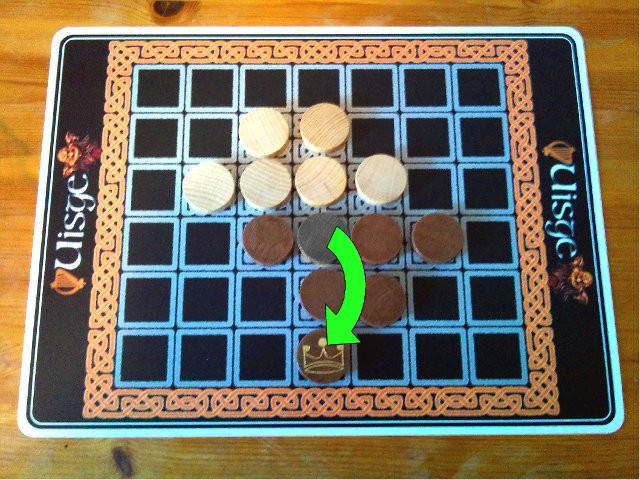

Uisge is a game claiming to
have Irish, Celtic or Gaelic influences.
Each player has Six pieces of own color. These are facing a King (showing a crown) on one side and a Pawn (without any symbol facing) on the other.
Game is played on a seven times six square board. This variant of the game board has squares marked where to place the player' s pawns initially for game set up.

Initial set up.

Flip when jumping.
Game play alternates between the two players. Player's turn consists in moving or jumping a piece of her or his color. Own Pawn or King pieces can jump in a straight direction orthogonally (horizontally or vertically but not diagonally) over any (opponent or own) single neighbouring piece on the adjacent free square by flipping the jumping piece from King to Pawn or vice versa.
Additionally a King is allowed to move to any adjacent empty square in horizontal, vertical, or even diagonal direction. In this case if it is moving (instead of jumping) it is not flipping but still being a King afterwards.
Note: A King can move diagonally but is never allowed to jump diagonally.

Kings can additionally move orthogonally and diagonally as well.

Jumping the King would disconnect the group forming a second group of two single pieces here. But the diagonal move is allowed.
Beware! During the whole game play all twelve pieces must stay connected horizontally or vertically forming a single group. Thus an illegal jump or move is made if pieces are not connected by horizontal or vertical adjacent own or opponent's pieces. In this case pieces located diagonal to each other would not be connected.
Finally the game is won by the player having all six own Kings facing up.
You can play different alternative rule sets if a situation comes up so that a player does not have any valid moves left. Alternatives proposed are:
- Player who can not move looses game.
- Player who can not move wins. This idea is basically like in Oware/Awale (a Manquala game). Thus you have to take care your opponent is not running out of possible moves.
- Game is a draw.
- Game continues and player without moves left simply skips his turn.
As an additional rule variant players might agree that Kings can jump diagonally flipping to be a Pawn, too.
Uisge claims to be a game with Irish, Celtic or Gaelic influences from 12th century. But there is no real reference or citation available to proof anything like a historical relation to any Celtic or Irish or Gaelic tradition or even board game. Most likely it is just branded being Irish, Celtic or Gaelic by publishers after 1983. In fact in 1983 the game Uisge has been published first named Scorpion in a magazine named Spielbox by a publisher W. Nostheide Verlag GmbH. There it looked quite non Irish and non Celtic and non Gaelic. Well,... Anyway uisce beatha is literally meaning water of life. See http://en.wikipedia.org/wiki/Whisky
Graphics, photographs taken and fonts used for creating this variant of the game are either own work or come from sources describing them as freely available, freeware, free for commercial and personal use in terms of fair use or have similar free licensing.
Special thanks to
- Jerry Landers (http://www.mouserfonts.com) for the Bouwsma Uncial font,
- Beekeeper Labs (http://beekeeperlabs.com/knotwize.html) for KnotWize used for creating the game board
To my best knowledge the game is out-of-production at the moment (September, 2011). The game has been honored being the Spiel des Jahres (Game of the year) Beautiful Game winner in 1984. For more information on publishers and related information visit http://boardgamegeek.com/boardgame/11421/uisge